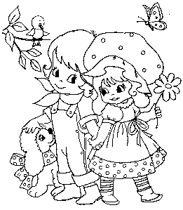

A necessary message by the Right Reverend Davis Greece
Since the Leader took over it has been important to change the way people
look at the concept of love for their own good. Previously there were
roughly three types of love:
The love between a man and a woman.
The love of a man for a fine Cuban cigar.
The love of a man for his family.
The Leader has decreed that three concepts are wholly unnecessary
and from February 15th only the third concept will exist, all others will
merge with other notions. The only love which can be continued is love for
the Leader. It is unquestionably assumed that you mean all three forms
when you mention the greatest man that ever lived. Personally I feel the
Leader is entirely correct and the previous ideas were outdated and
unnecessary. With the advance in the pornographic industry it is no longer
obligatory to even pretend to love a woman to rut with one; “lust” and
“horn” will cover this subject. A man who apparently loves his Capri; a
true human in most people’s eyes- however look closer. Which of the three
does he really mean? Types two and three are allowed but imagine he means
number one; that’s a no-no under the Leader and will be met with capital
punishment. Instead he will say what he means: 1) I horn after my Capri
2) I enjoy Capris. 3) I love my Capri. The ambiguity has entirely gone,
just because the Leader has updated an inefficient word.
I have access to one of the greatest harems (being Unit Commissar has it’s
benefits children: reach forth, strive hard and maybe you too could become
a Commissar) in the English Collective; therefore all my horn needs are
fulfilled. I feel no love (old style) for these women, yet they satisfy
all my needs, surely love is the wrong word? I own one of the finest
stretched Capris in the English Collective. It is one of the few of its
type, I enjoy my Capri- no ambiguity at all. I love my Capri, don’t we
all. In my WM1 state Valentine’s day has not been abolished, just changed
slightly. Everyone must send a picture of their favourite woman to the
Leader before midday. After midday it is lust day and everyone receives a
piece of free pornography. Let it not be said that I do not govern fairly
over my state, sing the Leader’s praises, follow my manifesto, show love
in the appropriate ways.